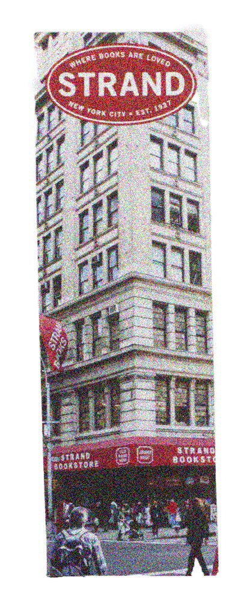

The Number One metropolis I’ve been longing to visit, New York. Times Square, the Statue of Liberty… There were so many places that I’d only seen on TV or magazines, now in front of me. At the same time, if you go further from the city, there are local places full of nature, such as along the Hudson River. I was shocked by “New York” have two different ends, both local and vibrant sides in one.
